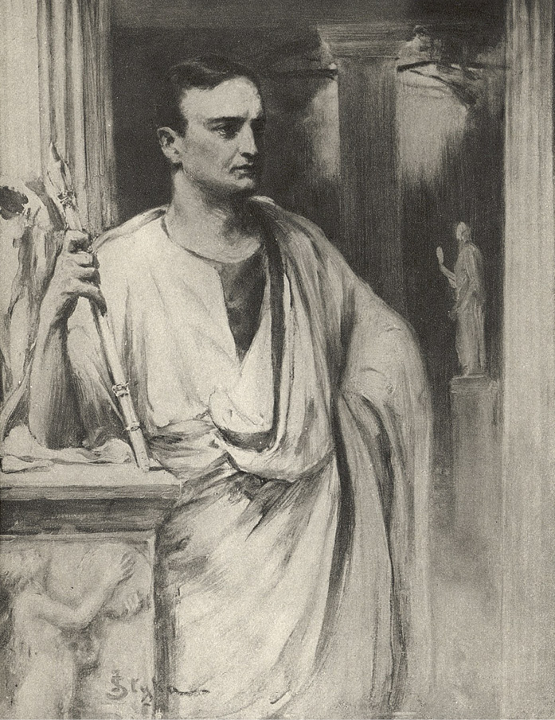
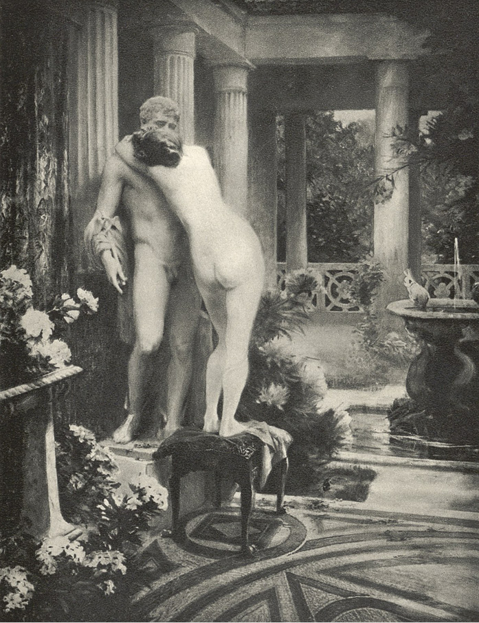

I
Petronius1 se probudil teprve až kolem poledne a jako obyčejně velice unaven. Předešlého dne byl u Nerona na hostině, která se protáhla do pozdní noci. Od kterési doby se jeho zdraví začalo kaziti. Sám říkal, že se probouzí ráno jako ztuhlý a že není s to, aby soustředil myšlenky. Ale ranní koupel a pečlivé hnětení těla otroky, kteří byli v tom vycvičeni, postupně zrychlovalo oběh jeho líné krve, probouzelo jej, křísilo, vracelo mu síly, takže z oleotekia, totiž z posledního oddělení v lázni, vycházel již jako obrozen, s očima lesknoucíma se jarostí a veselím, omlazen, pln života, lepý a tak nedostižný, že sám Otho2 se mu nemohl rovnati – a pravý „arbiter elegantiarum“3, jak mu říkávali.
Ve veřejných lázních býval zřídka; leda že by se objevil nějaký obdiv vzbuzující rétor, o němž se mluvilo ve městě, nebo když se v ephebiích4 výjimečně konaly zápasy. Ostatně měl na své „insuli“5 vlastní lázně, které mu proslulý vrstevník Severův6 Celer rozšířil, přestavěl a zařídil se vkusem tak neobyčejným, že sám Nero přiznával jim větší dokonalost nad caesarskými, ačkoliv caesarské byly prostrannější a zařízeny s přepychem nesrovnatelně větším.
Tedy po oné hostině, u které, unaven bláznovstvím Vatinia7, účastnil se společně s Neronem, Lucanem8 a Senekou diatriby9: má-li žena duši – vstav pozdě, užil koupele jako obyčejně. Dva obrovští balneatoři10 položili jej právě na cypřišovou „mensu“11, pokrytou sněhobílým egyptským byssem12 – a rukama smáčenýma ve vonném oleji začali natírati jeho lepé tělo – on pak čekal se zavřenýma očima, až teplo lakonika13 a teplo jejich rukou přejde do něho a vyžene z něho únavu.
Ale po nějaké době promluvil – a otevřev oči, jal se vyptávati na počasí a pak na šperky, které mu klenotník Idomen slíbil poslati dnešního dne, aby si je prohlédl… Ukázalo se, že počasí je krásné, provázené lehkými vánky od Albských hor, a že šperky nepřišly. Petronius opět zamhouřil oči a vydal rozkaz, aby byl přenesen do tepidaria14, když vtom za závěsem se vynořil „nomenclátor“15, ohlašuje, že mladý Markus Vinitius, právě zavítavší z Malé Asie, přišel jej navštívit.
Petronius rozkázal, aby host byl uveden do tepidaria, kam se odebral sám. Vinitius byl synem jeho starší sestry, která se před lety vdala za Marka Vinitia, konsulárního úředníka z dob Tiberiových16. Mladík nyní sloužil pod Corbulonem17 proti Parthům18 a po skončené válce vracel se do města. Petronius choval k němu jakousi příchylnost, která hraničila na oddanost, jelikož Markus byl krásný a atletický jinoch a přitom dovedl zachovávati určitou estetickou míru ve zkaženosti, čehož si Petronius nade všecko vážil.
„Pozdrav Petroniovi!“ řekl mladý člověk, vcházeje pružným krokem do tepidaria. „Kéž všichni bohové tě daří přízní a zvláště Asklepios19 a Kypris, neboť pod jejich dvojí záštitou nemůže tě potkati nic zlého!“
„Buď vítán v Římě a kéž ti kyne sladký odpočinek po válce!“ odvětil Petronius, vytahuje ruku ze záhybů měkké carbasové20 tkaniny, do níž byl zahalen. „Co je nového v Arménii a nezavadil jsi o Bithýnii21, meškaje v Asii?“
Petronius byl kdysi správcem Bithýnie, a což je důležitější, spravoval ji energicky a spravedlivě. Bylo to ve zvláštním rozporu s povahou člověka, pověstného svou zženštilostí a zálibou v rozkoších – a proto rád vzpomínal na ty doby, jelikož byly důkazem, čím by mohl a dovedl býti, kdyby se mu bylo zachtělo.
„Osud tomu chtěl, že jsem se dostal do Herakleie22,“ odvětil Vinitius. „Vyslal mne tam Corbulo s rozkazem, abych přivedl posily.“
„Ach, Herakleia! Znal jsem tam jednu dívku z Kolchidy, za kterou bych byl dal všecky zdejší rozvedené ženy, nevyjímaje ani Poppaeu23. Ale to jsou dávné děje! Mluv raději, co je slyšeti směrem od parthské zdi. Nudí mne sice všichni ti Vologesové24, Tiridatové25, Tigranové26 a všechno to barbarstvo, které, jak tvrdí mladý Arulanus, chodí doma ještě po čtyřech a jen před námi se tváří jako lidé. Ale teď se o nich mluví mnoho v Římě, byť i proto, že je nebezpečno mluviti o něčem jiném.“
„S tou válkou je to zlé, a kdyby nebylo Corbula, mohla by se změniti v porážku.“
„Corbulo! U Bakcha27, pravý to bůžek války, hotový Mars28, veliký vůdce, ale přitom ohnivý, řádný a hloupý! Mám ho rád, byť i jen proto, že se ho Nero bojí.“
„Corbulo není hloupý člověk.“
„Snad máš pravdu, ale konečně je to jedno! Hloupost, jak říká Pyrrho29, není v ničem horší nežli moudrost a ničím se od ní neliší.“
Vinitius počal vypravovati o válce, ale když Petronius přimhouřil víčka, mladý člověk, vida jeho unavenou a přepadlou tvář, změnil předmět hovoru a jal se ho vyptávati s jakousi starostlivostí na zdraví.
Petronius opět otevřel oči.
Zdraví…! Nikoli, necítil se zdráv. Nedospěl sice ještě tam, kam dospěl mladý Sissena30, který do té míry ztratil cit, že když byl ráno přenesen do lázní, ptal se: „Sedím?“ – Ale nebyl zdráv. Vinitius jej svěřil přízni Asklepiově a Kypridině31. Nebylo ani známo, čí synem byl ten Asklepios, zda Arsinoe32, či Koronidy33, a je-li matka neurčitá, jak teprve mluviti o otci! Kdo nyní může ručiti za svého vlastního otce!
Tu se Petroinius dal do smíchu, načež pokračoval:
„Poslal jsem sice přede dvěma lety do Epidaura34 tři tucty živých brávníků35 a kalich zlata, ale víš proč? Řekl jsem si: Pomůže-li to, dobrá, ale neuškodí. Dávají-li lidé na světě ještě bohům oběti, přece jen si myslím, že všichni rozumují tak jako já. Všichni, vyjímaje snad mezkaře, kteří se nechávají najmouti od pocestných u přístavu Capena. Kromě Asklepia měl jsem co činiti také s Asklepiovci36, když jsem loni trochu postonával na měchýř. Prováděli se mnou inkubaci37. Věděl jsem, že jsou to podvodníci, ale říkal jsem si také: Co mi to škodí! Svět stojí na lži a život je přeludem. Je však nutno míti tolik rozumu, abychom rozeznali přeludy rozkošné od bolestných. Ve svém hypokaustu38 poroučím topiti cedrovým dřívím posypaným ambrou, protože jsou mi za života milejší vůně nežli zápachy. Co se týče Kypridy, kterou jsi mi rovněž doporučil, poznal jsem její přízeň potud, že mám píchání v pravé noze. Ale jinak je to dobrá bohyně! Mám za to, že i ty poneseš nyní dříve či později bílé holuby na její oltář.“
„Tak jest,“ řekl Vinitius. „Nedostihly mne šípy Parthů, ale zasáhl mne šíp Amorův – zcela neočekávaně, několik stadií39 od bran města.“

Petronius
„U bílých kolenou Charitek40, povíš mi o tom, až bude volná chvíle!“ řekl Petronius.
„Přišel jsem právě, abych si na tobě vyžádal rady,“ odpověděl Markus.
Ale v té chvíli vešli epilatorové41, kteří se věnovali Petroniovi, Markus pak, odhodiv tuniku, vstoupil do vany s teplou vodou, poněvadž jej Petronius pozval do lázně.
„Ach, ani se neptám, je-li tvá láska opětována!“ odvětil Petronius, dívaje se na mladé, jako z mramoru vytesané tělo Vinitiovo. „Kdyby tě byl viděl Lysippos, zdobil bys nyní bránu vedoucí do Palatina42, jako Herkulova socha v mladém věku.“
Mladý člověk se spokojeně usmál a začal se hrouziti do vany, vychrstuje přitom hojně teplé vody na mosaiku, představující Héru ve chvíli, kdy prosí Sen, aby uspal Dia. Petronius díval se na něho spokojeným zrakem umělce.
Ale když byl hotov a svěřil se postupně epilatorům, vešel „lector“43 s bronzovou krabicí na břiše a papyrovými svitky v krabici.
„Chceš poslouchati?“ ptal se Petronius.
„Tvé-li to dílo, milerád!“ odpověděl Vinitius. „Pakli ne, milejší bude mi rozhovor. Básníci dnes chytají lidi na všech rozích ulic.“
„Ba, věru! Nepřejdeš mimo žádnou basiliku, mimo thermy44, mimo knihovnu nebo knihkupectví, abys nespatřil básníka, gestikulujícího jako opice. Agrippa45, když sem přijel z východu, pokládal je za pomatence. Ale takové jsou nyní časy. Caesar básní, a proto všichni kráčejí v jeho šlépějích. Nesmí jen nikdo psáti lepší verše, nežli jsou Caesarovy, a z toho důvodu se poněkud strachuji o Lucana… Ale já píši prosou, kterou však nečastuji ani sama sebe, ani jiných. To, co lector měl čísti, jsou, ‚codicilli‘46 toho ubohého Fabritia Veienta.“
„Proč ‚ubohého‘?“
„Protože mu bylo řečeno, aby si zahrál na Odyssea a nevracel se do domácího pelechu, dokud nebude nově rozhodnuto. Ta Odyssea bude mu o to lehčí než Odysseovi, že jeho žena není Penelopou. Ostatně, nepotřebuji ti říkati, že tu bylo jednáno hloupě. Ale zde nikdo nebéře věcí jinak nežli povrchně. Je to dosti chatrná a nudná kniha, která byla začata vášnivě čtena teprve potom, když autor byl poslán do vyhnanství. Teď je slyšeti ze všech stran: ‚Scandala! Scandala!‘ – a možná, že si některé věci Veientus vymyslil, ale já, který znám město, znám naše patres47 i naše ženy, ujišťuji tě, že je to všecko bledší než skutečnost. Buď jak buď, každý tam hledá sebe s obavou a známé s potěšením. V knihkupectví Avirunově sto scribů48 přepisuje knihu podle diktanda – a její úspěch je zabezpečen.“
„O tvých spádech tam není?“
„Jest, ale autor chybil, poněvadž jsem horší a přitom i méně mělký, nežli mne vylíčil. Hleď, my jsme tu dávno ztratili vědomí toho, co jest čestné a co nečestné, a mně samému připadá, jako by opravdu nebylo toho rozdílu, ačkoliv Seneka, Musonius a Thrasea se tváří, jako by ho neviděli. Mně je všecko jedno! U Herkula, mluvím, jak myslím! Ale zachoval jsem onu povýšenost, že vím, co jest ošklivé a co krásné, kdežto náš Rudobradý, vozataj, zpěvák, tanečník a histrio49 – toho nechápe.“
„Je mi však líto Fabritia! Je to řádný druh!“
„Zničila jej sebeláska. Každý jej měl v podezření, ale nikdo jasně nevěděl, a on sám nemohl vydržeti a na všecky strany se rozpovídal potají. Slyšel jsi historii Ruffinovu?“
„Ne.“
„Nuže, přejděme do frigidaria50, kde se ochladíme a kde ti ji povím.“
Přešli do frigidaria, v jehož středu tryskala fontána, zbarvená do světlerůžova a šířící vůni fialek. Tam, usednuvše do výklenků, vycpaných hedvábím, začali se ochlazovati. Chvíli panovalo mlčení. Vinitus díval se nějakou dobu v zamyšlení na bronzového fauna51, který přehnuv si nymfu přes ruku, chtivě hledal ústy její rty, načež řekl:
„Ten má pravdu. Hle, co je v životě nejlepší!“
„Více méně, ale ty kromě toho miluješ válku, které já nemám rád, protože pod stany praskají nehty a přestávají býti růžové. Ostatně, každý má své choutky. Rudobradý má rád zpěv, zejména svůj vlastní, a starý Scaurus svoji korintskou vázu, která v noci stojí u jeho lože a kterou líbá, nemůže-li spát. Vylíbal jí už okraje. Pověz mi, nepíšeš básní?“
„Ne, nikdy jsem nesložil celého hexametru.“
„A nehraješ na loutnu, nezpíváš?“
„Ne.“
„A nejsi vozatajem?“
„Závodil jsem svého času při dostizích v Antiochii52, ale bez úspěchu.“
„Nuže, jsem o tebe kliden. A k jaké straně patříš v hipodromu53?“
„K zeleným.“
„Pak jsem úplně kliden, zvláště když vládneš sice značným jměním, ale nejsi bohat jako Pallas54 nebo Seneka. Nu, hleď, u nás se teď vyplatí psáti básně, zpívati při loutně, deklamovati a závoditi při dostizích v cirku55, ale ještě lépe a zejména bezpečněji jest nepsati básní, nehráti, nezpívati a nezávoditi v cirku při dostizích. Nejlépe jest umět obdivovati se, činí-li tak Rudobradý. Jsi krásný hoch, a proto může ti hroziti leda to, že se Poppaea do tebe zamiluje. Ale na to jest příliš zkušená. Lásky užila dosyta s prvními dvěma manžely a u třetího jí běží o něco jiného. Víš-li pak, že ten hloupý Otho ji dosud miluje až k šílenství…? Chodí někde po skalách Španělska a vzdychá, mimo to tak pozbyl dávných návyků a tak přestal dbáti o sebe, že na úpravu účesu mu teď stačí tři hodiny denně. Kdo by se toho byl nadál, zvláště do Otha!“
„Já mu nerozumím,“ odvětil Vinitius. „Ale na jeho místě bych dělal něco jiného.“
„Co totiž?“
„Sestavoval bych legie56 sobě věrné z tamějších horalů. To jsou statní vojáci, ti Iberové57.“
„Vinitie! Vinitie! Skoro bych měl chuť říci, že bys toho nebyl schopen. A víš proč? Takové věci se totiž provádějí, ale nemluví se o nich ani podmínečně. Co mne se týče, smál bych se na jeho místě Poppaei, smál bych se Rudobradému a sestavoval bych si legie nikoli z Iberů, nýbrž z Iberek. Nanejvýše bych psal epigramy, kterých ostatně bych nikomu nepředčítal jako ten ubohý Ruffinus.“
„Měl jsi mi vyprávěti jeho historii.“
„Povím ti ji v unctuariu58.“
Ale v unctuariu se Vinitiova pozornost obrátila k něčemu jinému, totiž k rozkošným otrokyním, které tam čekaly na koupající se. Dvě z nich, černošky, podobající se nádherným sochám z ebenu, začaly natírati jejich těla jemnými voňavkami z Arábie, jiné, v česání zručné Frygijky59, držely v měkkých jako hadi ohebných rukou hlazená ocelová zrcadla a hřebeny, kdežto dvě řecké dívky z Cossu, podobající se přímo božstvu, čekaly jako „vestiplicae“60, až se dostaví chvíle k úpravě záhybů na tógách pánů jako u soch.
„U Dia Mračnotvůrce!“ řekl Markus Vinitius. „Jaký to máš výkvět služebných lidí!“
„Mám raději výkvět nežli počet,“ odpověděl Petronius. „Celá moje ‚familia‘61 v Římě nepřevyšuje čtyřiceti hlav a mám za to, že k osobní posluze snad jen zbohatlíci potřebují většího množství lidí.“
„Krásnějších těl nemá u sebe ani Rudobradý,“ pravil Vinitius, nadýmaje nozdry.
Nato odvětil Petronius s jakousi přátelskou nenuceností:
„Jsi můj příbuzný a já nejsem ani tak nevlídný jako Bassus62, ani takový pedant jako Aulus Plautius.“
Ale Vinitius, uslyšev to jméno, zapomněl na chvíli na dívky z Cossu, a živě zvednuv hlavu, ptal se:
„Odkud ti přišel na mysl Aulus Plautius? Víš-li pak, že já, pohmoždivši ruku u města, strávil jsem několik dní v jejich domě? Stalo se, že Plautius přijel v okamžiku nehody, a vida, že velice trpím, vzal mne k sobě, a tam jeho otrok lékař Merion vrátil mi zase zdraví. Právě o tom jsem chtěl s tebou promluviti.“
„Proč? Snad ses náhodou nezamiloval do Pomponie? Pak bych tě litoval: je nemladá a ctnostná! Nedovedu si představiti horšího spojení nad ono. Brrr!“
„Nikoli do Pomponie – eheu!“ řekl Vinitius.
„Nuže, do koho?“
„Kdybych to sám věděl, do koho! Já však ani dobře nevím, jak se jmenuje: zda Lygie, či Callina. Doma jí říkají Lygie, protože pochází z národa Lygů63, ale má své barbarské jméno Callina. Je to zvláštní dům těch Plautiů! Hemží se to tam lidmi, ale je ticho jako v Subiaku64. Nevěděl jsem několik dní, že v něm bydlí božství. Až jednou na úsvitě jsem ji spatřil, jak se umývá v zahradní fontáně. A přísahám ti při pěně, ze které se zrodila Afrodita, že paprsky ranních červánků procházely jejím tělem naveskrz. Myslil jsem, že až vzejde slunce, dívka se mi rozplyne ve světle, jako se rozplývá jitřenka. Od té doby jsem ji viděl dvakrát a od té doby také nevím, co je to klid, nevím, co jsou jiné touhy, nechci věděti, co mně může dáti město, nechci žen, nechci zlata, nechci korintské mědi ani jantaru ani perláku ani vína ani hostin, chci jen Lygii. Říkám ti upřímně, Petronie, že po ní toužím, jako toužil onen sen, vyobrazený na mosaice ve tvém tepidariu, po Paisithei65, toužím celé dny i noci.“
„Je-li otrokyní, kup si ji.“
„Není otrokyní.“
„Čím tedy jest? Osvobozenkyně Plautiova?“
„Nejsouc nikdy otrokyní, nemohla býti obdařena svobodou.“
„Nuže?“
„Nevím; buď dcerou královskou, nebo čímsi podobným.“
„Vzbuzuješ ve mně zvědavost, Vinitie.“
„Je-li ti libo vyslechnouti mne, ukojím tvoji zvědavost ihned. Historie není příliš dlouhá. Snad jsi osobně znal Vannia, krále Suevů66, jenž vyhnán z vlasti, dlouhý čas posedával zde v Římě, a dokonce se tu proslavil šťastnou hrou v kostky a tím, že obratně řídil koňské spřežení. Caesar Drusus uvedl jej opět na trůn. Vannius, který byl opravdu statný člověk, vládl z počátku dobře a vedl šťastné války, později však začal dříti kůži nejen sousedům, nýbrž i vlastním Suevům. Tehdy Vangio a Sido, jeho dva synovci, a synové Vibilia, krále Hermandurů67, rozhodli se, že jej donutí, aby jel opět do Říma – pokusit se o štěstí v kostkách.“
„Pamatuji se, jsou to nedávné časy Claudiovy.“
„Ano. Vypukla válka. Vannius vyzval ku pomoci Jazygy68, jeho milí synovci pak Lygy, kteří uslyševše o bohatství Vanniově a přivábeni nadějí na kořist, dostavili se v takovém počtu, že sám Caesar Claudius69 počal se obávati o mír na hranicích.
Claudius nechtěl se vměšovati do válek barbarů, dopsal však Ateliovi Histerovi, který velel podunajské legii, aby měl bdělé oko na průběh války a nedovolil, aby porušen byl náš klid. Hister tedy požádal Lygy, aby slíbili, že nepřekročí hranic, s čímž ti nejen souhlasili, nýbrž i dali rukojmí, mezi nimiž byla manželka, i dcera jejich vůdce… Je ti známo, že barbaři táhnou do války s ženami i dětmi… Nuže, má Lygie je dcerou onoho vůdce!“
„Odkud to všecko víš?“
„Řekl mi to sám Aulus Plautius. Lygové nepřekročili tenkrát opravdu hranic, ale barbarové se ženou jako bouře a prchají jako bouře. Tak zmizeli i Lygové se svými tuřími rohy na hlavách. Pobili i Vanniovy Suevy a Jazygy, ale jejich král padl, načež odešli s kořistí, kdežto ženy jako rukojmí zůstaly v rukou Histerových. Matka záhy zemřela, kdežto dítě poslal Hister, nevěda, co s ním počíti, ke správci celé Germánie, Pomponiovi. Ten, ukončiv válku s Catty, vrátil se do Říma, kde Claudius, jak víš, dovolil mu, aby slavil triumf. Dívka se tehdy ubírala za vozem vítězovým, ale po skončené slavnosti, poněvadž nebylo možno považovati dívku, danou jako rukojmí, za zajatkyni, nevěděl zase Pomponius, co s ní počíti, a konečně ji odevzdal své sestře Pomponii Grecině, ženě Plautiově. V tom domě, kde všecko, počínaje pány až po drůbež v kurníku, je samá ctnost, vyrostla na dívku pohříchu tak ctnostnou jako sama Grecina a tak krásnou, že by sama Poppaea proti ní vypadala jako podzimní fík proti jablku Hesperidek70.“
„Nu, a?“
„Opakuji ti, že od té chvíle, co jsem viděl, jak paprsky procházely u fontány jejím tělem, zamiloval jsem se do ní na smrt.“
„Je tudíž průhledná jako lucernička nebo jako mladá sardinka?“
„Nežertuj, Petronie, a jestliže tě klame nenucenost, s jakou mluvím o své touze, věř, že pestré roucho často zahaluje hluboké rány. Také ti musím říci, že vraceje se z Asie, přespal jsem jednu noc ve chrámě Mopsově71, abych měl věštecký sen. A hle, ve snu se mi zjevil sám Mopsus a zvěstoval mi, že v mém životě dojde k veliké změně vlivem lásky.“
„Slyšel jsem, jak Plinius72 říkal, že nevěří v bohy, ale že věří ve sny, a je možná, že má pravdu. Mé žerty také mi někdy nepřekážejí, abych si myslil, že jest opravdu jen jedno božství, odvěké, vševládné, tvůrčí, Venus Genetrix73. Ta spojuje duše, spojuje těla i věci. Eros vytvořil svět z chaosu. Učinil-li dobře, toť jiná, ale když je tomu tak, musíme uznati jeho moc, byť i smíme jí ne zrovna žehnati…“
„Ach, Petronie, ve světě je snazší filosofovati nežli dáti dobrou radu!“
„Rci mi, co vlastně chceš?“
„Chci míti Lygii, chci, aby tyto mé paže, jež objímají nyní pouze vzduch, mohly obejmouti ji a přitisknouti na prsa. Chci dýchati jejím dechem. Kdyby byla otrokyní, dal bych za ní Aulovi sto dívek s nohami, obílenými vápnem na znamení, že byly po prvé vystaveny na prodej. Chci ji míti ve svém domě tak dlouho, dokud má hlava nezbělí jako vrchol Soracte74 v zimě.“
„Jest otrokyní, ale koneckonců náleží k familii Plautiově, a protože jest opuštěné dítě, může býti pokládána za ‚alumnu‘75. Plautius by ti ji mohl přenechati, kdyby chtěl.“
„Pak tedy snad neznáš Pomponie Greciny. Ostatně, oba k ní přilnuli jako ke vlastnímu dítěti.“
„Pomponii znám. Je to hotový cypřiš. Kdyby nebyla ženou Aulovou, bylo by možno objednávati si ji jako plačku. Od smrti Juliiny nesňala se sebe tmavé stoly a vůbec vypadá, jako by ještě za života chodila po louce, porostlé asfodely76. Jest kromě toho ‚univira‘77, a proto mezi našimi ženami, rozvedenými čtyřikrát až i pětkrát, je zároveň fénixem78… Než slyšel jsi, že fénix jako by se opravdu byl nyní vylíhl v hořejším Egyptě, což se mu stává ne častěji nežli jednou za pět set let?“
„Petronie! Petronie! O fénixu si povíme až někdy jindy!“
„Povím ti tedy něco, milý Marku. Znám Aula Plautia, který přesto, že odsuzuje můj způsob života, přece jen ke mně lne, a snad i dokonce má ke mně větší úctu nežli k jiným, poněvadž ví, že jsem nikdy nebyl udavačem jako na příklad Domitius Afer79, Tigellinus80 a celá smečka přátel Ahenobarbových. Netváře se kromě toho jako stoik81, nejednou jsem se ušklíbal při chování Neronově, na které se Seneka i Burrhus dívali spatra. Domníváš-li se, že mohu pro tebe u Aula něco vymoci – jsem ti k službám.“
„Soudím, že můžeš. Máš na něho vliv a kromě toho tvůj duch se honosí nevyčerpatelnými prostředky. Kdyby ses rozhlédl po situaci a promluvil s Plautiem…“
„Máš příliš veliký pojem o mém vlivu a důmyslu, ale jde-li pouze o to, promluvím s Plautiem, jakmile se přestěhuješ do města.“
„Vrátili se přede dvěma dny.“
„Pak tedy pojďme do triclinia82, kde na nás čeká snídaně, a potom, posilníce se, dáme se zanésti k Plautiovi.“
„Byl jsi ke mně vždycky milý,“ odvětil na to s živostí Vinitius, „ale teď dám postaviti mezi vavříny tvoji sochu – ó, tak krásnou jako tato zde a budu jí přinášeti oběti.“
To praviv, otočil se směrem k sochám, které zdobily celou jednu stěnu vonné komnaty, a rukou ukázal na sochu Petroniovu, představující jej jako Herma s kyjem v ruce.
Pak dodal:
„U světla Heliova, byl-li ti ‚božský‘ Alexander podoben, nelze se diviti Heleně!“
A v tom zvolání bylo tolik upřímnosti, kolik zalichocení, neboť Petronius, ač starší a méně atletický, byl dokonce i krásnější nežli Vinitius. Ženy v Římě se obdivovaly nejen jeho pružné mysli a vkusu, který mu zjednal názvu „arbitra elegantiarum“, nýbrž i – tělu. Ten obdiv bylo přímo znáti na tvářích oněch dívek z Kosu, které nyní skládaly záhyby jeho tógy a z nichž jedna, jménem Eunike, potají ho milující, hleděla mu do očí s pokorou a roztoužením.
Ale on tomu nevěnoval ani pozornosti, nýbrž usmáv se na Vinitia, začal mu citovati jako odpověď Senekův úsudek o ženách:
„Animal impudens…“83
A pak, rukou objav jeho ramena, vyprovodil jej do triclinia.
V unctuariu dvě řecké dívky, Frygijky, a dvě černošky začaly odklizovati epilichnia84 s voňavkami. Leč v témž okamžiku za poodhrnutým závěsem od frigidaria ukázaly se hlavy balneatorů a ozvalo se tiché „Psst!“ – a na to vyzvání jedna z Řekyň, Frygijky a dvě Ethiopky, živě; přiskočivše, ve mžiku, zmizely za závěsem. Ve thermách se začínala chvíle bujnosti a rozpustilosti, které inspektor85 nepřekážel, protože sám často se účastnil podobných dovádivých kousků. Domyslil se jich ostatně i Petronius, ale jako člověk rozvážný a nemilující trestů nedíval se na ně spatra.
V unctuariu zůstala jen Eunike. Nějakou dobu naslouchala hlasům, vzdalujícím se ve směru lakonika, jakož i smíchu, až konečně, zvednuvši jantarem a sloní kostí vykládanou stolici, na které před chvílí seděl Petronius, opatrně ji přistrčila k jeho soše.
Unctuarium bylo plno sluneční záře a barev, odrážejících se od pestrých mramorů, jimiž byly obloženy stěny.
Eunike vystoupila na stolici – a octnuvši se ve výši sochy, pojednou vrhla se jí rukama kolem krku – a pak, odhodivši nazad své zlaté vlasy a tulíc růžové tělo k bílému mramoru, začala v roztoužení tisknouti ústa na studené rty Petroniovy.

… a tulíc tělo k bílému mramoru…
Historická osoba z Neronovy doby, satirický básník. ↩︎
Římský císař z 1. st. n. l., první manžel Poppaey Sabiny, provdané za Nerona, původně jeho přítel, později odpůrce. Roku 69 n. l. spáchal sebevraždu kvůli nezdařenému povstání. ↩︎
Rozhodčí (soudce) ve věcech vkusu. ↩︎
Síň ve starověkých ústavech, na nichž se vzdělávali jinoši; byla určena jejich tělesnému výcviku. ↩︎
O samotě stojící budova nebo komplex budov. ↩︎
Jméno několika římských císařů. ↩︎
Historická osoba, stvůra Neronova domu. ↩︎
Starořímský básník z 1. st. n. l. ↩︎
Učený rozhovor. ↩︎
Lazebníci. ↩︎
Stůl. ↩︎
Jemný druh hedvábí. ↩︎
Místnost v lázních, kde se udržovala vyšší teplota. ↩︎
Ovlažovna v starořímských lázních. ↩︎
Otrok, který pánovi doma ohlašoval jména přicházejících hostů, na ulici jména občanů, které potkávali. ↩︎
(Claudius Nero) – druhý římský císař z konce 1. st. př. n. l. a začátku 1. st. n. l. ↩︎
Slavný starořímský vojevůdce z 1. st. n. l. ↩︎
Starověký asijský národ, proslulý obratnými jezdci a lukostřelci. ↩︎
Bůh lékařství. ↩︎
Z jemného plátna. ↩︎
Římská provincie na severovýchodě Malé Asie. ↩︎
Starověké město na pobřeží Bithýnie. ↩︎
Poppaea Sabina – historická osoba, choť Neronova, zemřela r. 65 n. l. poté, co ji Nero v těhotenství surově nakopl. ↩︎
Jméno starých parthských králů. ↩︎
Zakladatel staré parthské říše z 3. st. př. n. l. ↩︎
Tigranes – arménský král z 2. st. př. n. l. ↩︎
Bůh vína a bujného veselí. ↩︎
Bůh války. ↩︎
Starořecký filozof z 4. stol. př. n. l. ↩︎
Starořímský dějepisec z 1. st. př. n. l. ↩︎
Básnické pojmenování bohyně Afrodity. ↩︎
Jedna ze starověkých egyptských královen. ↩︎
Dcera thesalského vládce Flegia. ↩︎
Starořecké město s Asklepiovým chrámem. ↩︎
Druh drozda. ↩︎
Kněží v Asklepiových chrámech, kteří také léčili nemocné. ↩︎
Způsob věštění ze snů, jemuž se podrobovali zejména nemocní, aby zjistili, jaký lečivý prostředek jim pomůže. ↩︎
Parní lázeň. ↩︎
Starověká dálková míra, asi 200 m. ↩︎
Bohyně půvabu a krásy. ↩︎
Otroci odstraňující svému pánovi vlasy a chlupy na nežádoucích místech. ↩︎
Palác římských císařů na stejnojmenném pahorku nad Římem. ↩︎
Předčítatel. ↩︎
Lázně. ↩︎
Státník a římský vojevůdce z 1. st. př. n. l. ↩︎
Dopisy, listy, žádosti. ↩︎
Členové starořímského senátu. ↩︎
Písaři, obvykle vzdělaní otroci nebo osvobozenci. ↩︎
Herec. ↩︎
Lázeňská místnost se studenou vodou. ↩︎
Průvodce Dionýsův, zobrazovaný jako člověk s kozími rohy, kozím ocasem, kozíma nohama a s dlouhýma ušima. ↩︎
Jméno několika starořeckých měst v Asii. ↩︎
Starověké závodiště pro koňské dostihy. ↩︎
Svobodou obdařený otrok matky císaře Claudia, vedl státní finance a adoptoval Nerona, který ho kvůli jeho velkému majetku nechal r. 62 n. l. otrávit. ↩︎
Široké, obdélné, na obou koncích zaokrouhlené závodiště. ↩︎
Oddíl starořímského vojska, čítající 4200–6000 pěšáků a 300 jezdců. ↩︎
Starověký národ záhadného původu, sídlící kdysi v celé Hispanii a částečně i v Galii. ↩︎
Lázeňská místnost, kde zvláštní otroci natírali svého pána olejem. ↩︎
Příslušnice starověkého národa z Malé Asie. ↩︎
Otrokyně zaměstnané v šatně pána. ↩︎
Otrokům v domácnosti se říkalo „familia“. ↩︎
Satirický římský básník z 1. st. n. l. ↩︎
Starodávný kmen, připomínaný starými dějepisci v krajích u horní a střední Odry až k pramenům Visly. ↩︎
Starověké město severně od Říma, kde měl Nero svůj letohrádek. ↩︎
Správně Pasithea, dle řeckého bájesloví manželka boha spánku Hypna, jedna z Charitek. ↩︎
Starověký germánský kmen žijící mezi Dunajem a Mohanem. ↩︎
Starověký germánský kmen z Polabí. ↩︎
Starověký sarmatský kmen. ↩︎
Římský císař z 1. st. n. l. ↩︎
Řecké bájné nymfy, které hlídaly zlatá jablka v zázračné zahradě. ↩︎
Starověký věštec. ↩︎
Slavný starořímský dějepisec z 1. stol. n. l. ↩︎
Venuše Roditelka. Starořímská Venuše byla ctěna jako pramáti římského národa a celého lidstva. ↩︎
Příkrá hora severně od Říma na pravém břehu Tibery. ↩︎
Dcera zámožných římských rodičů, kterou dali na vychování k cizím lidem. ↩︎
Liliovitá rostlina zasvěcená bohyni Persefoně; rostla na louce v podsvětí, na které prý pobývaly duše zemřelých. ↩︎
Manželka věrná svému choti. ↩︎
Staroegyptský bájný pták podobný orlovi, vždy po 500 letech se sám ve vém hnízdě spálil, aby pak zase omlazen vzlétl z popela. ↩︎
Starořímský řečník, prétor (vyšší úředník se soudní pravomocí) a konzul z 1. st. n. l., člověk nečestné povahy. ↩︎
Historická osoba, Neronův milec, jenž po pádu tohoto tyrana zemřel vlastní rukou. ↩︎
Přívrženec filozofické školy starořeckého mudrce Zenona, který hlásal nutnost úplné mravnosti u člověka, jež přináší nerušený duševní klid. ↩︎
Starořímská jídelna. ↩︎
Nestoudný tvor. ↩︎
Krabice. ↩︎
Dozorce, správce. ↩︎